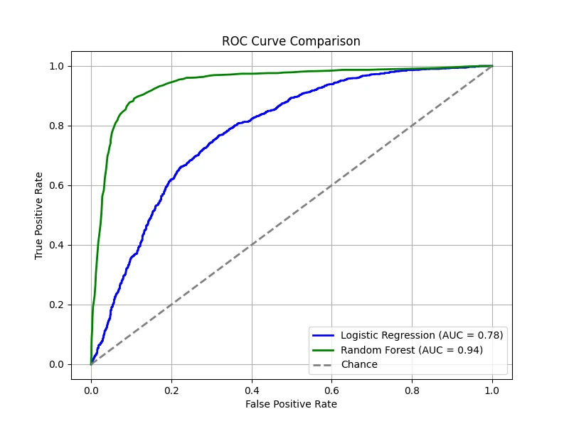
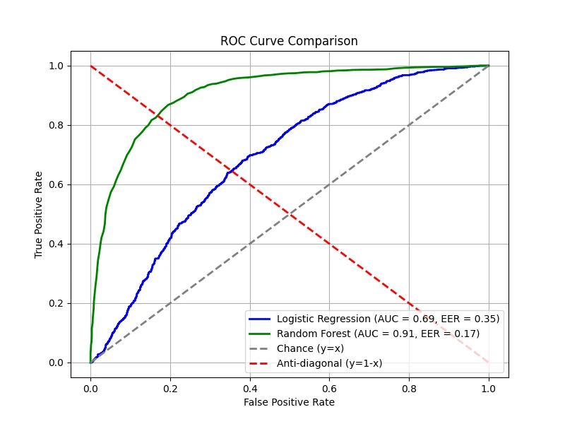
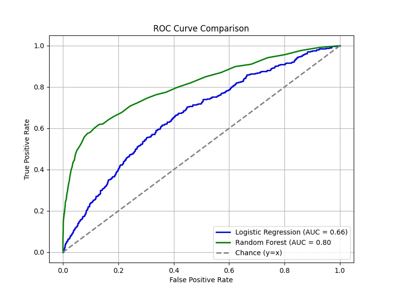

Introduction
In decision theory, an agent has a set of possible actions to choose from. Each action \(a \in \mathcal{A}\)
is associated with costs and benefits that depend on the state of nature \(h \in \mathcal{H}\).
This relationship is encoded into a loss function \(l(h, a)\).
Bayesian decision theory is a probabilistic approach to decision-making under uncertainty. It provides a framework for making
optimal decisions based on prior knowledge and observed data. The fundamental idea is to minimize the expected risk (or loss) by
leveraging Bayesian inference. This approach is widely used in probabilistic machine
learning models such as classification, inference, and prediction.
For any action \(a\) given evidence, which can be single observation \(\boldsymbol{x}\) or a dataset \(\mathcal{D}\), we compute the
posterior expected loss:
\[
\rho(a | \boldsymbol{x}) = \mathbb{E}_{p(h| \boldsymbol{x})} [l(h, a)] = \sum_{h \in \mathcal{H}} l(h, a)p(h |\boldsymbol{x}).
\]
The Bayes estimator(or Bayes decision rule / optimal policy) specifies what action to take when presented with
evidence \(boldsymbol{x}\) so as to minimize the risk(loss):
\[
\pi^* (\boldsymbol{x}) = \arg \min_{a \in \mathcal{A}} \mathbb{E}_{p(h|\boldsymbol{x})}[l(h, a)].
\]
Equivalently,
\[
\pi^* (\boldsymbol{x}) = \arg \max_{a \in \mathcal{A}} \mathbb{E}_{h}[U(h, a)],
\]
where \(U(h, a) = - l(h, a)\) is a utility function that is the desirability of each action in each possible state.
This formulation is useful when working in utility-based decision-making, where the focus is on maximizing expected rewards rather
than minimizing losses. (e.g., economics, game theory, and reinforcement learning)
Classification (Zero-One Loss)
A common application of Bayesian decision theory is classification.
In this context, we aim to select the optimal class label for a given input \(\boldsymbol{x} \in \mathcal{X}\).
Suppose that the states of nature correspond to labels:
\[
\mathcal{H} = \mathcal{Y} = \{1, \cdots, C\}.
\]
and that the possible actions are also the class labels:
\[
\mathcal{A} = \mathcal{Y}.
\]
In this case, a typical loss function is the zero-one loss:
\[
l_{01} (y^*, \hat{y}) = \mathbb{I}(y^* \neq \hat{y}),
\]
where \(y^*\) is the true label, and \(\hat{y}\) is the predicted label.
Under the zero-one loss, the posterior expected loss for choosing label \(\hat{y}\) becomes will be
\[
\rho(\hat{y}| \boldsymbol{x}) = p(\hat{y} \neq y^* | \boldsymbol{x}) = 1 - p (y^* = \hat{y}| \boldsymbol{x}).
\]
Thus, minimizing the expected loss is equivalent to maximizing the posterior probability:
\[
\pi (\boldsymbol{x}) = \arg \max_{y \in \mathcal{Y}} p( y | \boldsymbol{x} ).
\]
In other words, the optimal decision is to select the mode of the posterior distribution, which
is the maximum a posteriori (MAP) estimate.
In some scenarios, especially when the risks associated with making an incorrect decision are high, it is prudent
to allow the system to express uncertainty. This is called the reject option. Under this approach,
the set of available actions is expanded to include the reject action:
\[
\mathcal{A} = \mathcal{Y} \cup \{0\},
\]
where action \(0\) represents the reject option (i.e., saying "I'm not sure").
The loss function can be defined as:
\[
l(y^*, a)=
\begin{cases}
0 &\text{if \(y^* = a\) and \(a \in \{1, \cdots, C\}\)} \\
\lambda_r &\text{if \(a = 0\)} \\
\lambda_e &\text{otherwise} \\
\end{cases}
\]
where \(\lambda_r\) is the cost of reject action, and \(\lambda_e\) is the cost of a classification error.
Under this framework, instead of always choosing the label with the highest posterior probability, the optimal policy is to
choose a label only when the classifier is sufficiently confident:
\[
a^* =
\begin{cases}
y^* & \text{if \(p^* > \lambda^*\)} \\
\text{reject} & \text{otherwise}
\end{cases}
\]
where
\[
\begin{align*}
&p^* = p(y^* | x) = \max_{y \in \{1, \cdots, C\}} p(y | x) \\
&\lambda^* = 1 - \frac{\lambda_r}{\lambda_e}
\end{align*}
\]
Proof for \(\lambda^* = 1 - \frac{\lambda_r}{\lambda_e}\):
The optimal decision is to choose the class label \(y\) if and only if its risk, \(R(y)\) is lower than the risk of rejecting, \(R(\text{reject})\).
In other words, we choose \(y\) if
\[
\begin{align*}
&R(y) < R(\text{reject}) \\\\
&\Longrightarrow \lambda_e \Bigl[\sum_{y^* \neq y} p(y^* | x)\Bigr] < \lambda_r \\\\
&\Longrightarrow \lambda_e [1 - p(y|x)] < \lambda_r \\\\
&\Longrightarrow p(y|x) > 1 - \frac{\lambda_r}{\lambda_e} \\\\
\end{align*}
\]
Thus, if the maximum posterior probability \(p^*\) exceeds the threshold \(\lambda^* = 1 - \frac{\lambda_r}{\lambda_e}\),
then the classifier should choose the corresponding label. Otherwise, it should reject.
Confusion Matrix
In classification tasks, it's crucial to evaluate how well the model performs. A common tool for this is the
(class) confusion matrix, which summarizes the outcomes of classification decisions. The
confusion matrix captures the following:
- True Positives (TP): The number of instances correctly classified as positive.
- True Negatives (TN): The number of instances correctly classified as negative.
- False Positives (FP): The number of instances incorrectly classified as positive (Type I error).
- False Negatives (FN): The number of instances incorrectly classified as negative (Type II error).
Understanding FP and FN is crucial because the costs associated with each error type may differ significantly depending
on the application. In safety-critical systems, a FN (missing a dangerous condition) might be far more costly than a FP
(raising an unnecessary alarm). For example, in a medical test, a FP would mean diagnosing a healthy patient as having
a disease, whereas a FN would mean missing a disease in a patient who actually has it, which is more critical in medical
fields.
For binary classification, the confusion matrix typically looks like this:
Table 1: Confusion Matrix for Binary Classification
\[
\begin{array}{|c|c|c|}
\hline
& \textbf{Predicted Positive} (\hat{P} = TP + FP)
& \textbf{Predicted Negative} (\hat{N} = FN + TN) \\
\hline
\textbf{Actual Positive} (P = TP + FN) & \textbf{TP} & \textbf{FN} \\
\hline
\textbf{Actual Negative} (N = FP + TN) & \textbf{FP} & \textbf{TN} \\
\hline
\end{array}
\]
In our context, the confusion matrix quantifies the outcomes of decisions made by the Bayes estimator, which is designed to
minimize the zero-one loss. It provides an empirical measure of the performance of that optimal policy by counting how often
the decisions (predicted labels) match or mismatch the true labels.
For any fixed threshold \(\tau\), consider the decision rule:
\[
\hat{y}_{\tau}(\boldsymbol{x}) = \mathbb{I}(p(y = 1 | \boldsymbol{x}) \geq 1 - \tau).
\]
We can compute the empirical number of them that arise from using the policy on a set \(N\) labeled examples. For example,
\[
\text{FP}_{\tau} = \sum_{n=1}^N \mathbb{I}( \hat{y}_{\tau}(\boldsymbol{x}_n) = 1, \, y_n = 0)
\]
and
\[
\text{FN}_{\tau} = \sum_{n=1}^N \mathbb{I}( \hat{y}_{\tau}(\boldsymbol{x}_n) = 0, \, y_n = 1).
\]
Table 2: Threshold-dependent Confusion Matrix
\[
\begin{array}{|c|c|c|}
\hline
& \hat{y}_{\tau}(\boldsymbol{x}_n) = 1
& \hat{y}_{\tau}(\boldsymbol{x}_n) = 0 \\
\hline
y_n = 1 & \text{TP}_{\tau} & \text{FN}_{\tau} \\
\hline
y_n = 0 & \text{FP}_{\tau} & \text{TN}_{\tau} \\
\hline
\end{array}
\]
ROC Curves
Here, we normalize the confusion matrix per row to obtain \(p(\hat{y}|y)\). (The sum of the
entries in each row is 1.) The row-normalized confusion matrix is useful when optimizing for recall-focused tasks,
such as detecting rare events like cybersecurity threats or disease outbreaks.
Table 3: Confusion Matrix Normalized per Row
\[
\begin{array}{|c|c|c|}
\hline
& 1 & 0 \\
\hline
1 & \text{TP}_{\tau} / P = \text{TPR}_{\tau} & \text{FN}_{\tau} / P = \text{FNR}_{\tau} \\
\hline
0 & \text{FP}_{\tau} / N = \text{FPR}_{\tau} & \text{TN}_{\tau} / N = \text{TNR}_{\tau} \\
\hline
\end{array}
\]
- True positive rate (TPR) (or Sensitivity / Recall): \[
\text{TPR}_{\tau} = p(\hat{y} = 1 | y = 1, \tau) = \frac{\text{TP}_{\tau}}{\text{TP}_{\tau} + \text{FN}_{\tau}}.
\]
- False positive rate (FPR) (or Type I error rate / Fallout): \[
\text{FPR}_{\tau} = p(\hat{y} = 1 | y = 0, \tau) = \frac{\text{FP}_{\tau}}{\text{FP}_{\tau} + \text{TN}_{\tau}}.
\]
- False negative rate (FNR) (or Type II error rate / Miss rate):\[
\text{FNR}_{\tau} = p(\hat{y} = 0 | y = 1, \tau) = \frac{\text{FN}_{\tau}}{\text{TP}_{\tau} + \text{FN}_{\tau}}.
\]
- True negative rate (TNR) (or Specificity):\[
\text{TNR}_{\tau} = p(\hat{y} = 0 | y = 0, \tau) = \frac{\text{TN}_{\tau}}{\text{FP}_{\tau} + \text{TN}_{\tau}}.
\]
Often, we plot the TPR vs FPR as an implicit function of \(\tau\); this plot is known as the receiver operating characteristic
(ROC) curve. The overall quality of a classifier is often summarized using the AUC(Area Under the Curve).
A higher AUC indicates better discriminative ability across all threshold values (max = 1.0).
The figure below compares two classifiers — one trained using logistic regression and the other using a random forest. Both classifiers
provide predicted probabilities for the positive class, allowing us to vary \(\tau\) and compute the corresponding TPR and FPR. A diagonal
line is also drawn, representing the performance of a random classifier — i.e., one that assigns labels purely by chance. On this line,
the TPR equals the FPR at every threshold. If a classifier's ROC curve lies on this diagonal, it means the classifier is performing no
better than random guessing. In contrast, any performance above the diagonal indicates that the classifier is capturing some signal,
while performance below the diagonal (rare in practice) would indicate worse-than-random behavior.
In our demonstration, the logistic regression model has been intentionally made worse, yielding an AUC of 0.78, while the random forest
shows superior performance with an AUC of 0.94. These results mean that, overall, the random forest is much better at distinguishing
between the positive and negative classes compared to the underperforming logistic regression model.

(Data: 10,000 samples, 20 total features, 5 features are informative, 2 clusters per class, 5% label noise.)
Equal Error Rate (EER)
The equal error rate (EER) is the point where FPR = FNR. This is an important threshold in
some applications (e.g., biometric authentication) where false positives and false negatives are equally costly. The EER provides
a single value to compare classifiers, particularly when precision and recall trade-offs must be balanced.
Below is the EER point for our models, showing where the two error rates intersect:

Note: the minimum EER is 0 corresponding to the top left corner. In many real-world applications, we might tune the threshold
to minimize EER.
Precision-Recall Curves
Next, we normalized the original confusion matrix per column to obtain \(p(y | \hat{y})\).
(The sum of the entries in each column is 1.) The column-normalized confusion matrix is useful when the precision
is crucial (e.g., medical diagnosis, fraud detection).
Table 4: Confusion Matrix Normalized per Column
\[
\begin{array}{|c|c|c|}
\hline
& 1 & 0 \\
\hline
1 & \text{TP}_{\tau} / \hat{P} = \text{PPV}_{\tau} & \text{FN}_{\tau} / \hat{N} = \text{FOR}_{\tau} \\
\hline
0 & \text{FP}_{\tau} / \hat{P} = \text{FDR}_{\tau} & \text{TN}_{\tau} / \hat{N} = \text{NPV}_{\tau} \\
\hline
\end{array}
\]
- Positive predictive value (PPV) (or Precision):\[
\text{PPV}_{\tau} = p(y = 1 | \hat{y} = 1, \tau) = \frac{\text{TP}_{\tau}}{\text{TP}_{\tau} + \text{FP}_{\tau}}.
\]
- False discovery rate (FDR):\[
\text{FDR}_{\tau} = p(y = 1 | \hat{y} = 0, \tau) = \frac{\text{FP}_{\tau}}{\text{TP}_{\tau} + \text{FP}_{\tau}}.
\]
- False omission rate (FOR):\[
\text{FOR}_{\tau} = p(y = 0 | \hat{y} = 1, \tau) = \frac{\text{FN}_{\tau}}{\text{FN}_{\tau} + \text{TN}_{\tau}}.
\]
- Negative predictive value (NPV):\[
\text{NPV}_{\tau} = p(y = 0 | \hat{y} = 0, \tau) = \frac{\text{TN}_{\tau}}{\text{FN}_{\tau} + \text{TN}_{\tau}}.
\]
To summarize a system's performance — especially when classes are imbalanced (i.e., when the positive class is rare)
or when false positives and false negatives have different costs — we often use a precision-recall (PR) curve. This
curve plots precision against recall as the decision threshold \(\tau\).
Imbalanced datasets appear frequently in real-world machine learning applications where one class is naturally much rarer than
the other. For example, in financial transactions, fraudulent activities are rare compared to legitimate ones. The classifier must
detect the very few fraud cases (positive class) among millions of normal transactions (negative class).
Let precision be \(\mathcal{P}(\tau)\) and recall be \(\mathcal{R}(\tau)\). If \(\hat{y}_n \in \{0, 1\}\) is the predicted
label and \(y_n \in \{0, 1\}\) is the true label, then at threshold \(\tau\), precision and recall can be estimated by:
\[
\mathcal{P}(\tau) = \frac{\sum_n y_n \hat{y}_n}{\sum_n \hat{y}_n},
\quad
\mathcal{R}(\tau) = \frac{\sum_n y_n \hat{y}_n}{\sum_n y_n}.
\]
By plotting the precision vs recall for various the threshold \(\tau\), we obtain the PR curve.
This curve visually represents the trade-off between precision and recall. It is particularly valuable in situations where one
class is much rarer than the other or when false alarms carry a significant cost.
Raw precision values can be noisy; therefore, an interpolated precision is often computed. For a given recall
level (e.g., at least 10%), the interpolated precision is defined as the maximum precision observed for any recall level greater
than or equal to that value. The average precision (AP) is the average of these interpolated precision values
over the entire range of recall. Conceptually, AP is equal to the area under the interpolated PR curve.
It provides a single number summary of the classifier's performance across all thresholds. Note that the AP calculated from the interpolated curve may differ
from the area under the raw PR curve.
In our case, the logistic regression produced an AP of 0.73, meaning that on average, when this classifier predicts positive,
about 73% of its predictions are correct, and the random Forest produced an AP of 0.93, indicating a much stronger performance.
Note: In settings where multiple PR curves are generated (for example, one for each query in information retrieval or one per class in
multi-class classification), the mean average precision (mAP) is computed as the mean of the AP scores over all
curves. mAP offers an overall performance measure across multiple queries or classes.
Class Imbalanced
A dataset is considered imbalanced when one class has significantly fewer examples than the other. For example, in a binary
classification task, a dataset may contain only 5% positive samples and 95% negative samples. In such cases, many traditional
evaluation metrics, like accuracy, can be misleading. A model that always predicts the majority class (negative) can achieve
high accuracy without correctly identifying minority class instances.
The ROC-AUC metric is often insensitive to class imbalance because the TPR is defined as a ratio
within the positive samples and the FPR is defined as a ratio within the negative samples only. So, it does not matter which class
we define as positive or negative.
On the other hand, PR-AP metric is more sensitive to class imbalance. Remember that the precision is given by:
\[
\text{Precision} = \frac{TP}{TP + FP},
\]
which depends "both" on positive and negative samples.
To demonstrate this, we create a dataset where 90% of the samples belong to the negative class and only 10% belong to the positive class.
Then, we train both the logistic regression model and the random forest model again:


ROC curves remain relatively smooth, and AUC does not drop drastically, even though the dataset is highly imbalanced.
PR curves, however, show a much distinct difference, with lower AP scores, highlighting how class imbalance makes it harder to
achieve good precision and recall simultaneously. Even though random forest performs better than logistic regression, it struggles
to detect the rare positive cases effectively.
Note: PR curves focus on precision and recall, which directly reflect how well a model identifies the rare (minority) class. Precision,
in particular, is affected by even a small number of false positives, giving a more realistic picture of performance when the positive
class is scarce. Thus, PR-AP is usually the better choice for class imbalance problems because it directly measures performance on the
minority class.